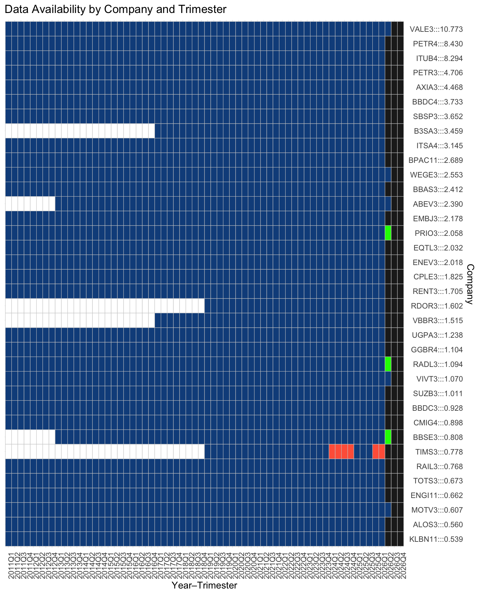

ontology healthcheck validation...
23 sectors and 171 assets
indexes updated at 2026-05-05 (IBOV~60%=12) (IBOV~90%=38) (IBOV=79) (SMLL=110) quantamental healthcheck validation...Este espaço é destinado a quem deseja ver a implementação técnica sem a camada didática.
Para detalhes sobre funções específicas do R, consulte o Tidyverse Help.
ontology healthcheck validation...
23 sectors and 171 assets
indexes updated at 2026-05-05 (IBOV~60%=12) (IBOV~90%=38) (IBOV=79) (SMLL=110) quantamental healthcheck validation...Loading objects…
ontology <- DAL_Ontology$new() ; quantamental <- DAL_Quantamental$new()ontology healthcheck validation...
23 sectors and 171 assets
indexes updated at 2026-05-05 (IBOV~60%=12) (IBOV~90%=38) (IBOV=79) (SMLL=110) quantamental healthcheck validation...Listar os participantes, assets:
ontology$get_assets() |> sample(15) [1] "VVEO3" "GMAT3" "XPBR31" "BPAN4" "POMO4" "LOGG3" "CAML3" "AZZA3"
[9] "PETR4" "LEVE3" "SAPR11" "LAVV3" "ECOR3" "SYNE3" "PCAR3" Setores:
ontology$get_sectors() [1] "Açúcar e Álcool" "Agronegócio"
[3] "Água e Saneamento" "Alimentos e Bebidas"
[5] "Aluguel de Carros" "Bancos"
[7] "Bens Industriais" "Educação"
[9] "Energia Elétrica" "Fintech e Investimentos"
[11] "Holdings" "Infraestrutura"
[13] "Metais e Mineração" "Moradia"
[15] "Papel e Celulose" "Petróleo"
[17] "Propriedades Comerciais" "Saúde"
[19] "Seguradoras" "Serviços Financeiros"
[21] "Tecnologia" "Telecom"
[23] "Varejo" Índices:
data.frame(
`Índice` = c("IBOV_60", "IBOV_90", "IBOV", "SMLL"),
Participantes = c(
ontology$get_b3_index()$IBOV_60 |> nrow(),
ontology$get_b3_index()$IBOV_90 |> nrow(),
ontology$get_b3_index()$IBOV |> nrow(),
ontology$get_b3_index()$SMLL |> nrow()
),
Descrição = c(
"60% do índice IBOV",
"90% do índice IBOV",
"Índice Bovespa completo",
"Índice Small Caps"
)
) Índice Participantes Descrição
1 IBOV_60 12 60% do índice IBOV
2 IBOV_90 38 90% do índice IBOV
3 IBOV 79 Índice Bovespa completo
4 SMLL 110 Índice Small Capslibrary(gt)
df <- quantamental$assets(c("VALE3","BRAP4","CMIN3","CSNA3","GGBR4","USIM5"))
df |> filter(date>=max(date)-365) |> group_by(asset) |> mutate(var_12M=(last(close)/first(close))-1) |> filter(date==max(date)) |> ungroup() |> mutate(marketcap=marketcap*1000,Net_Profit_12M=Net_Profit_12M*1000) |>
select(asset,Report_Date,marketcap,Net_Profit_12M,roe,var_12M,pe) |>
arrange(desc(marketcap)) |>
gt() |>
cols_label(
asset = "Ticker",
Report_Date = "Last Report",
marketcap = "Marketcap",
Net_Profit_12M = "Lucro.12M",
pe = "P/L",
roe = "ROE",
var_12M = "Var.12M"
) |>
fmt_date(Report_Date,date_style="MMMd") |>
fmt_number(c(marketcap,Net_Profit_12M),decimals=1,suffixing=T) |>
fmt_number(pe,decimals=2) |>
fmt_percent(c(roe,var_12M),decimals=1) |>
tab_header(
title = "Features disponíveis pelo modelo",
subtitle = "Cada linha representa uma empresa e cada coluna uma feature."
)| Features disponíveis pelo modelo | ||||||
| Cada linha representa uma empresa e cada coluna uma feature. | ||||||
| Ticker | Last Report | Marketcap | Lucro.12M | ROE | Var.12M | P/L |
|---|---|---|---|---|---|---|
| VALE3 | Jul 31 | 327.0B | 8.7B | 4.3% | 42.0% | 37.63 |
| GGBR4 | Apr 28 | 51.7B | 1.7B | 3.2% | 62.6% | 30.91 |
| CMIN3 | May 14 | 32.0B | 2.2B | 31.5% | 20.0% | 14.36 |
| USIM5 | Apr 24 | 9.2B | −2.4B | −10.0% | 74.3% | NA |
| BRAP4 | Nov 13 | 8.7B | 1.1B | 12.4% | 39.5% | 7.67 |
| CSNA3 | May 14 | 6.5B | −1.3B | −8.4% | −32.3% | NA |
Para um analista quantamental, o maior risco não é um modelo errado, mas um dado corrompido ou ausente. A seção de Telemetria atua como o painel de controle (dashboard) do nosso ecossistema, garantindo que a ontologia esteja íntegra antes de qualquer tomada de decisão.
Uma das métricas vitais da telemetria é a densidade de cobertura dos balanços. Como cada empresa listada deve, obrigatoriamente, publicar um relatório a cada trimestre. Lacunas nesse mapa podem indicar desde atrasos na divulgação pela empresa até falhas no processo de extração (scraping).
O gráfico abaixo apresenta a matriz de disponibilidade de relatórios. Cada linha representa uma empresa e cada coluna um trimestre fiscal. O preenchimento em azul indica que o dado foi capturado e integrado com sucesso.

Nota para Devs: No backend, essa telemetria é gerada cruzando o
get_assets()com a contagem de entradas únicas na tabela de fundamentos. Secount(reports) < expected_quarters, um alerta é disparado no log do sistema.
Este espaço é destinado a quem deseja ver a implementação técnica sem a camada didática. Para detalhes sobre funções específicas do R, consulte o Tidyverse Help.